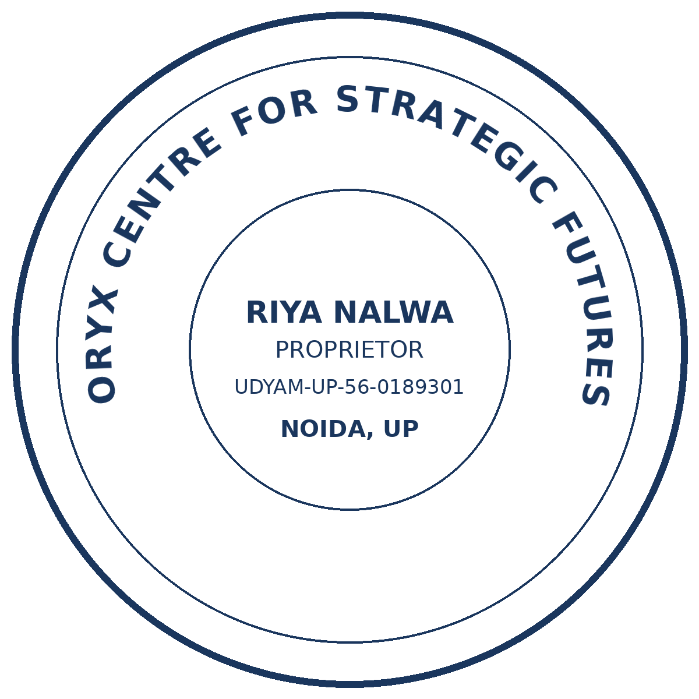

Oryx Centre for Strategic Futures
Research and policy initiative — AI, geopolitics, emerging technologies, strategic foresight and the Global South
Riya Nalwa, Proprietor — Udyam-registered micro enterprise, UDYAM-UP-56-0189301
BR 82, RWA Sector 45, Noida, UP 201303 · https://oryxcentre.dpdns.org · amartya@oryxcentre.dpdns.org

Seller stamp design — design only, not a physical stamp. Udyam number to be proofed character by character before any stamp maker use.
Report: What does published evidence say about large language models in healthcare, 2023–2026?
Job ID: 20261031-011705-c98c4d | Model: glm-4.7-flash | Status at draft: needs_review
Reviewer: Riya Nalwa | Approval date: 31 October 2026
Reviewer verdict (31 Oct 2026, 19:09 IST, verbatim): “content as reviewed, with no corrections — so it can proceed to final export, create all documents too, like yu will with my seller kit”
Operator approval: Amartya Kumar, 31 Oct 2026 ~19:12 IST, following the reviewer verdict above.
Metrics (mechanical, unchanged from the draft): 10 candidates screened, 7 included, 3 excluded; 7 sources, 7 cited; evidence-table rows 7, verified 7/7; claim sentences 35, cited 21, sourced-claim rate 60%; citation markers 25, invalid markers none.
Important: The adversarial-review flags in this report are preserved verbatim. The reviewer approved the content as reviewed, with no corrections — the flags were NOT resolved, removed, or hidden by this export. This certificate attests to review and approval of this draft as written; it is not a claim that every cited source supports every claim, and it is not a client delivery.
App-approval note: The public beta (oryxai.pythonanywhere.com) was down at export time, so the beta app's own Approve button could not be clicked. This certificate was therefore produced from the verified draft and the written approval chain above — no app approval is faked or claimed.